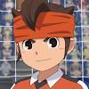
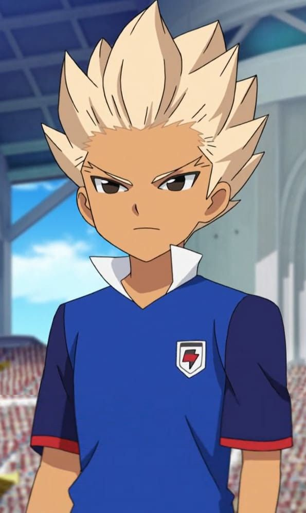
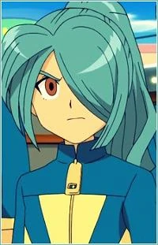
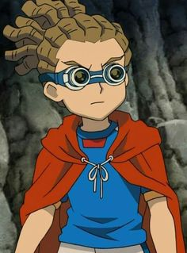
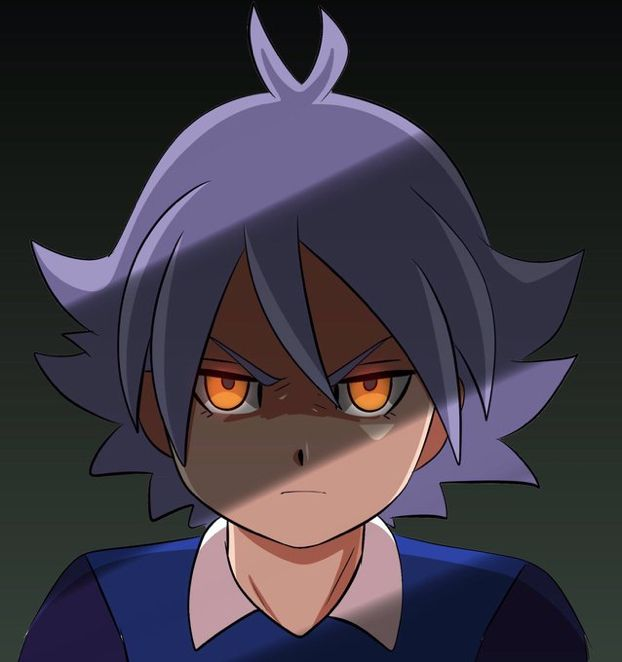
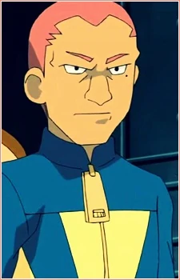
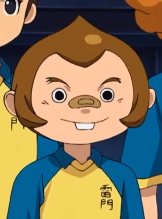
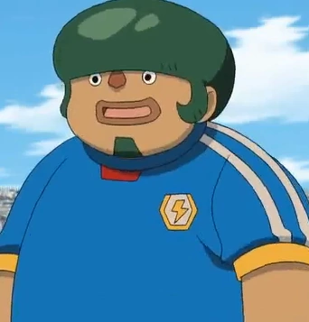

PERSONAGENS

Endou Mamoru

Gouenji Shuuya

Kazemaru

Kidou Yuuto

Shirou Fubuki

Ryugo Someoka

Kurimatsu

Kabeyama
CURIOSIDADES
ESCOLA RAIMON
A Escola Raimon é o local em que Endo e seu time estuda, representando o seu colégio em torneios estaduais e nacionais de Futebol, em seu mais conhecido o Futebol Fronteira. O Colégio possui 3 andares e uma biblioteca muito grande. Além de uma quadra de futebol em que são realizados treinos e até jogos. Como por exemplo o jogo, logo no começo da primeira temporada, entre a Escola Raimon e o Instituto Imperial.
ELENCO
1 Satoru Endo (C) - Goleiro
2 Ichirota Kazemaru - Lateral
3 Heigoro Kabeyama - Zagueiro
4 Jim Kageno (Sombra) - Zagueiro
5 Teppei Kurimatsu - Lateral
6 Shinichi Handa - Volante
7 Ayumu Shorinji - Meia
8 Sakichi Shido - Meia
9 Kuusuke Matsuno (Max) - Meia
9 Shiro Fubuki (D) (T) - Zagueiro
10 Shuya Goenji - Atacante
11 Ryugo Someoka - Atacante
11 Utsonomya Toramaru - Atacante
12 Megane (Quatro olhos) - Atacante
13 Asuka Domon Zagueiro
14 Yuto Kido Meia
9 Atsuya/Fubuki Atacante
2 Ichirota Kazemaru - Lateral
3 Heigoro Kabeyama - Zagueiro
4 Jim Kageno (Sombra) - Zagueiro
5 Teppei Kurimatsu - Lateral
6 Shinichi Handa - Volante
7 Ayumu Shorinji - Meia
8 Sakichi Shido - Meia
9 Kuusuke Matsuno (Max) - Meia
9 Shiro Fubuki (D) (T) - Zagueiro
10 Shuya Goenji - Atacante
11 Ryugo Someoka - Atacante
11 Utsonomya Toramaru - Atacante
12 Megane (Quatro olhos) - Atacante
13 Asuka Domon Zagueiro
14 Yuto Kido Meia
9 Atsuya/Fubuki Atacante

@animeshon_lm

@Animeshon.lm